When rigging a character, a skeleton is added to to simulate the bones of a character.
However, most facial movement are not controlled by a skeleton, for these we use blend shapes.
IMPORTANT - Creating blend shapes should be done before binding your skeleton to your mesh
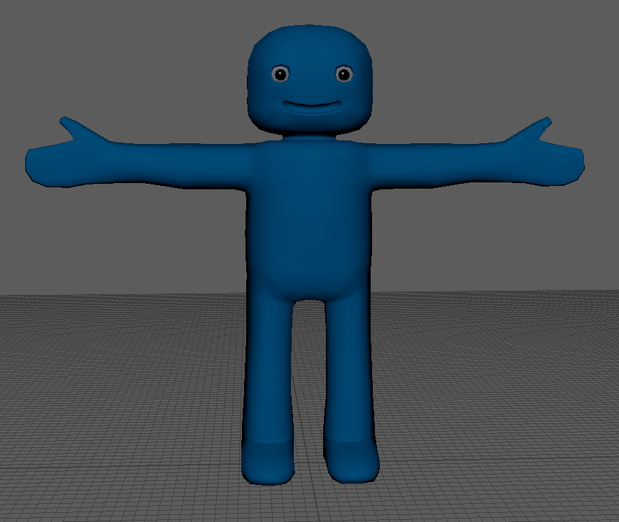
Select the body mesh in the Outliner.
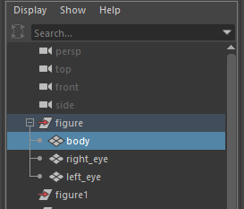
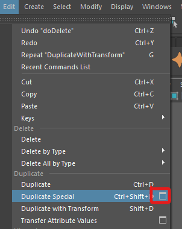
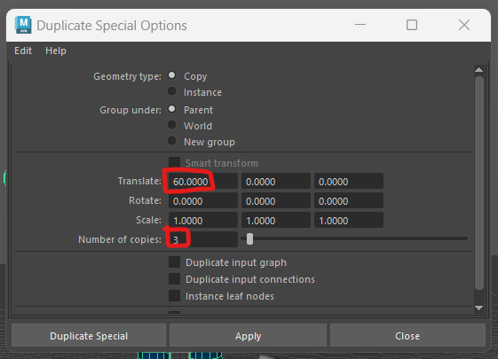
We now need to rename the copies, the names we choose will be used to label the blend shapes we create.
Double click on body1 in the Outliner and rename it "right_blink"
In the same way, rename body2 to "left_blink" and body3 to "mouth"
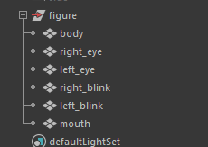
We want to leave the original character as it is, but we can now edit the features on each body of all the duplicated meshes to match the new names.
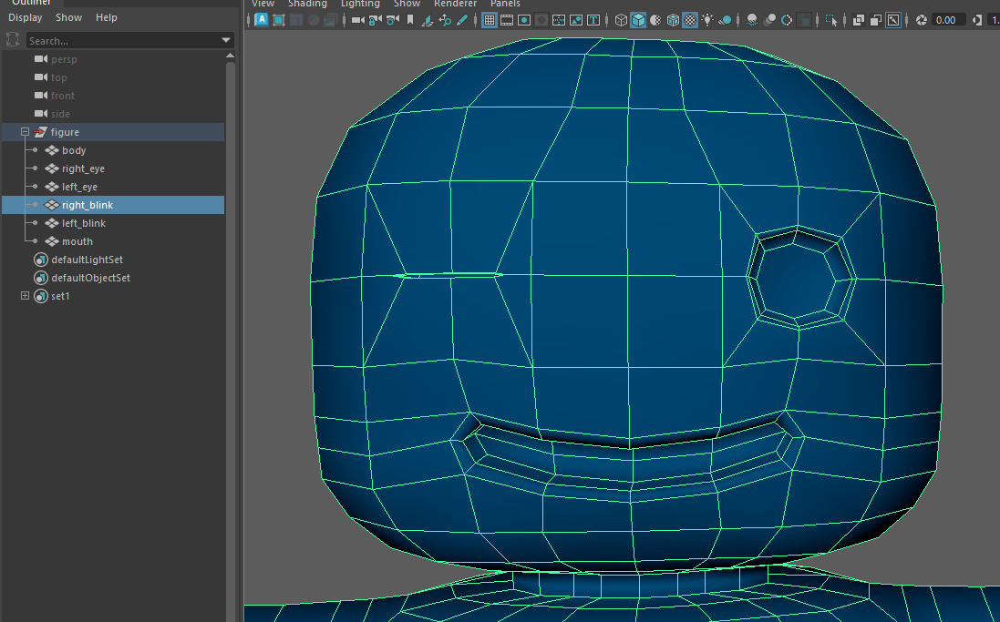
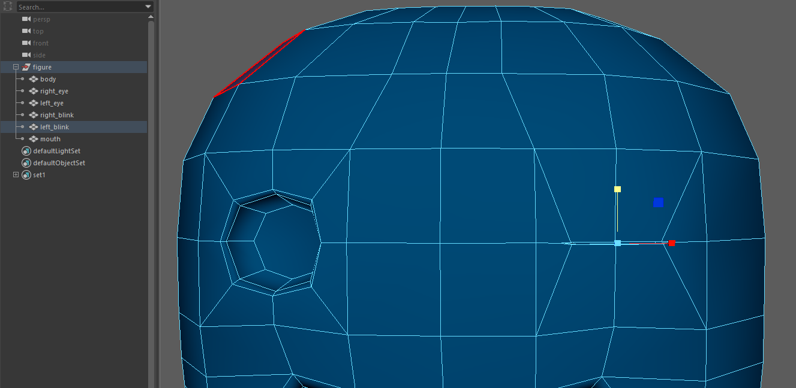
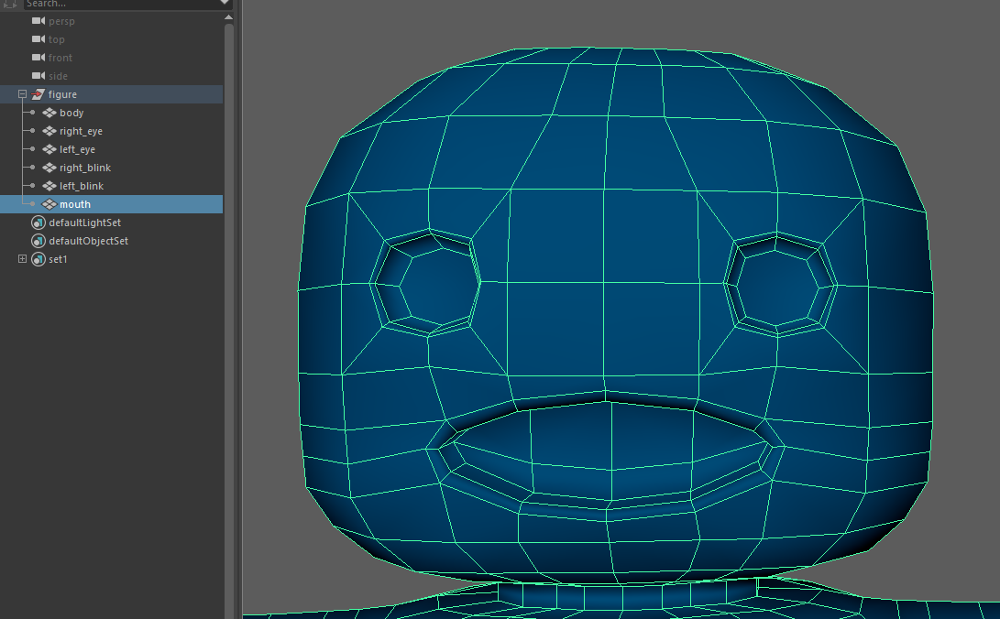
We can now use these 4 meshes to create our blend shapes.
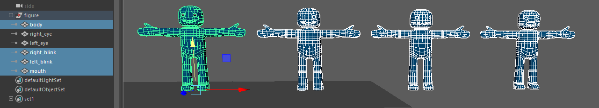
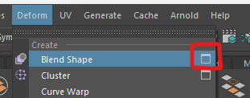
Our new blend shapes will be grouped togeter, BlendShape node is where we put the name of the group, I choose "face"
Tick Delete targets, this will remove the duplicate meshes, leaving us with only the original mesh.
Press Apply
If you select your original body mesh, you should now have a new tab in your attribute editor called face
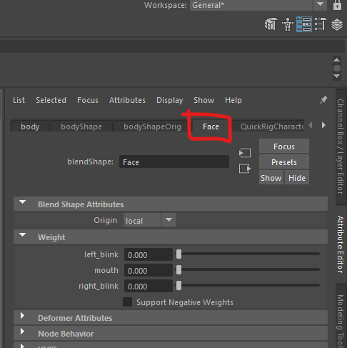
You should see that there are 3 sliders called left_blink, mouth and right_blink
As these are now attributes you can keyframe them the same way as you keyFrame the controllers on your rig.
We can just use the blend shapes as they are, but to work professionally we want to create controllers for these blend shapes so they can be easily accessed and animated.
To create the controllers follow the video bellow this worksheet in Blackboard.